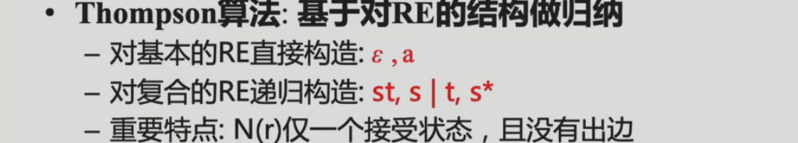
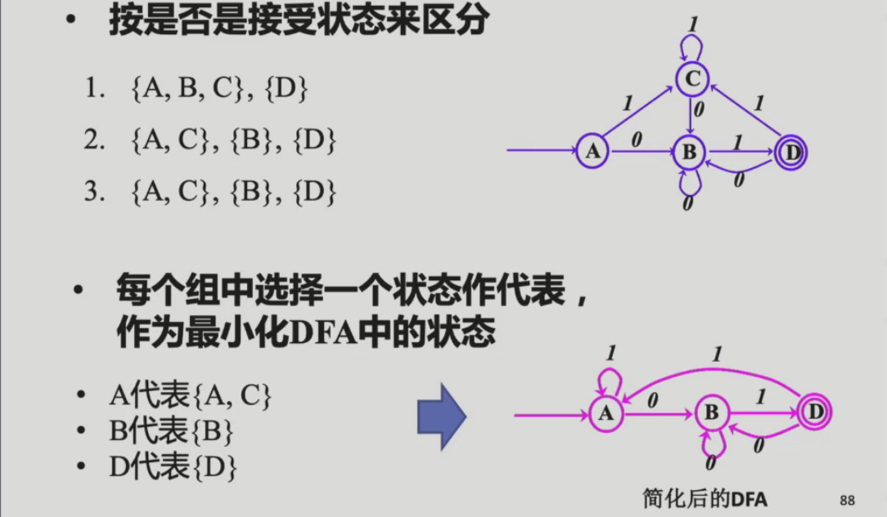

2 Lexical Analysis 词法分析¶
2.0 总览¶
- 以字符流输入
- 识别token并以token流输出
- 删除程序中不必要的东西（例如空白、注释等）
Token - 词法记号，单词
Lexeme - 词素
例子：

开发者自己命名的会附带语义值例如s、3；
2.1 Lexical Token词法单词¶
- a lexical token由一序列的字符组成，是语法的基本单元
- 语义值可以是无限的，但是单词的类型一定是有限的
- reserved words - 不能被用作identifier类型token语义值的words
- non-tokens - 例如宏定义、include、注释等等
2.1.1 词法分析器的生成¶
我们可以通过某种方式自动化地由声明式的规范生成对应的词法分析器。
首先我们考虑最朴素的词法分析规则（语言描述）：

更精确的、机器友好的表述方式：正则表达式；实现方式：确定性有限自动机

而我们所要讨论的就是REX转DFA的过程
2.2 Regular Expression正则表达式¶
2.2.1 正则表达式定义¶
同计算理论。见REX笔记
正则语言优先级：幂>连接>并
正则表达式优先级：闭包>连接>选择
一些简写（不扩展表达能力）：

正则定义
例子：
2.2.2 正则表达式在词法分析中的应用¶
流程：
使用正则表达式完成词法分析的例子：
注：error表示上述没有一个匹配上了的（是必须的）
2.2.3 歧义处理¶
bit ambiguous - 一个字符流可以匹配多个正则表达式，例如if8
处理方法：
- longest match 最长匹配
- rule priority 规则优先 - 根据规则和规则之间的优先级关系，越前面越高
2.3 FA¶
DFA是生成正则表达式匹配程序的程序实现（很难直接自动生成REX的匹配程序）
2.3.1 DFA的程序实现（DFA转Lexer）¶
通过一个二维数组判断状态转换（state 0是判定为不接收的状态），一个一维finality数组实现终止状态类型判断：
不过不同token类型的有限自动机是分开的：

我们需要把输入跑在一个FA上，要将这些自动机组合：

然后将终止状态标记上对应的token类别
如何实现最长匹配？
一边走一边记已经经过的final状态以及最后一个final状态是什么，对应的类型是什么，直到走到了0状态。
例子（自动机就是figure2.4的自动机）：

我们通过last final序列实现最长匹配。
2.3.2 REX转DFA¶
通过NFA（定义见笔记）。
注：在编译原理中，FA的转换函数的定义和计算理论课程略有出入（本质不变）：
NFA转换函数的解释：
整体流程：
2.3.2.1 REX转NFA¶

基本思路是把REX里面的基本元素和操作对应到NFA里面的每个部分：


可以不按照递归规则逐步构造，人工构造可以构造出更简单的NFA。
各token类别NFA组合方式：
- 新建一个起始状态分别指向各个token类别NFA的起始状态，转换条件为\(\epsilon\)
- 合并所有规则
例子：

2.3.2.2 NFA转DFA¶
见笔记。
因为NFA需对多种路径试探+失败回退，效率很低。
算法实现与例子：

- 为了避免状态指数爆炸的问题，我们只有在访问到对应的状态的时候才将其添加入
state[]数组内。 - 在终止状态的判断中，我们采用优先级规则，如果同时包括了两个token类别的终止状态，判定为优先级更高的token类别的终止状态。
- DFA构建出来后，
state可以舍弃，trans需要保留。
2.3.2.3 DFA简化¶
- 一个正则语言可对应于多个识别此语言的DFA，通过DFA的最小化可得到状态数量最少的DFA（不计同构的情况下唯一）。
把等价状态（能够接收和拒绝同样的字符串的两个/多个状态）简化为一个状态。
简化方式：把其中一个状态\(s_2\)的入边指向另一个状态\(s_1\)，删掉\(s_2\)。
如何找等价状态（充分条件）？
- 一致性条件：首先，要么都是终止状态。要么都是非终止状态；
- 蔓延性条件：其次，如果for any symbol c,
trans[s1, c] == trans[s2, c]，那么s1和s2等价。
另外一种定义的写法：
化简算法 - Hopcroft算法：
- 划分部分：根据以上条件迭代式划分等价类
- 构造部分：从划分得到的等价类中选取代表，并重建DFA
例子：

2.4 Lex: 一个词法分析器的生成器¶
基于REX生成C程序完成词法分析。
输入：
- REX
- action：每当匹配到指定类型的token，完成什么行为，例如
count++
输出：
- C语言实现的词法分析器
例子：

考试有可能给正则表达式画dfa，期中考第9周每个老师独立出卷考试改卷，当堂考试